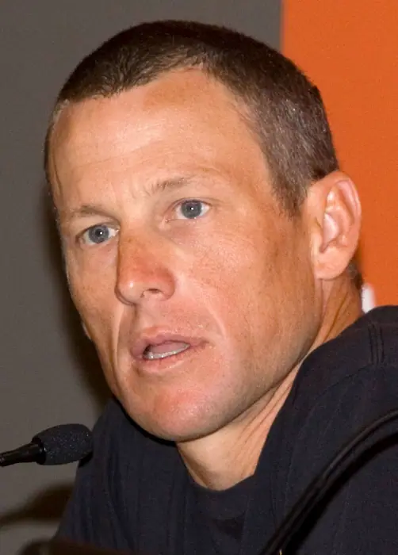

Politics · Mastodon #worldnews · Sep 18, 2026
White House withdraws Lance Schroyer’s nomination to lead ICE https://www. aljazeera.com/news/2026/9/18/w hite-house-withdraws-lance-schroyers-nomination-to-lead-ice?traffic_source=rss # aljazeera
White House withdraws Lance Schroyer’s: Mastodon #worldnews

Introduction
White House withdraws Lance Schroyer’s: Mastodon #worldnews
Background & context (from research brief)
# White House withdraws Lance Schroyer’s nomination to lead ICE https://www. aljazeera.com/news/2026/9/18/w hite-house-withdraws-lance-schroyers-nomination-to-lead-ice?traffic_source=rss # aljazeera
Why it matters
Political developments today reflect voter concerns and policy directions shaping legislative agendas.
Source & further reading
This page aggregates the headline and context; the full original report is linked in the source panel below. Topic keywords: white, house, withdraws, lance, schroyer’s.